Compare the solar pressure force for uniform and irregular materials.
Demonstrate optical properties which vary across the sail membrane, and compare to a uniform sail surface. The sail is in the X/Y plane and the sun incidence angle is in the X/Z plane.
Try running it for both flat and billowed shapes by changing the state of the sailIsFlat flag. There will be no torque on the uniform flat sail but substantial torques on the irregular flat sail even for zero incidence angle, due to the change in the center of pressure. The y torque on the billowed sail will be dominated by the sail shape but the x and z torques will be similar.
This demo uses the default random number generator so you will get the same irregular optical properties over multiple runs. ------------------------------------------------------------------------- See also: SailMesh, CP1Props, SolarPressureForce -------------------------------------------------------------------------
Contents
%------------------------------------------------------------------------------- % Copyright 2014 Princeton Satellite Systems, Inc. %-------------------------------------------------------------------------------
Define your sail model
The circular sail perimeter is in the X/Y plane.
%------------------------------------------------ sailIsFlat = true; theta = linspace(0,2*pi,20); theta = theta(1:end-1); rSail = 50; % m x = rSail*cos(theta); y = rSail*sin(theta); if sailIsFlat % Flat sail [v,f] = SailMesh( x, y ); shape = 'Flat'; else % Billowed sail dBillow = struct('b',0.1,'r',rSail); [v,f] = SailMesh( x, y, 'HCircularBillow', dBillow, 3 ); shape = 'Billowed'; end [a, n, r] = PolygonProps( v, f ); nEl = length(a); % center of mass rCM = [0;0;0];
Display the sail
%------------------ NewFig('Sail Mesh') patch('vertices',v,'faces',f,... 'facevertexcdata',v(:,3),'CDataMapping','scaled',... 'facecolor','interp','edgecolor',[0 0 0]); axis equal; grid on; colorbar xlabel('x'); ylabel('y'); zlabel('z');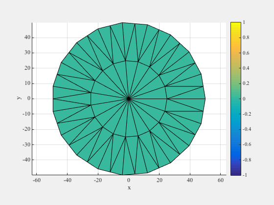
Define the optical properties
CP1 properties - about 90% specular
%------------------------------------ [optical, infrared, thermal] = CP1Props; % Change optical properties throughout mesh sigmaS = ones(nEl,1)*optical.sigmaS; sigmaA = ones(nEl,1)*optical.sigmaA; sigmaD = ones(nEl,1)*optical.sigmaD; sigmaT = ones(nEl,1)*optical.sigmaT; % Specify the default random number generator so the optical properties are % the same for successive runs. scurr = rng; rng('default'); for k = 1:nEl % introduce random changes in specular coefficient, maintain the sum of % coefficients to be 1. 1 is the front of the sail and 2 is the back. sigmaS(k,1) = min(sigmaS(k,1) + 0.06*randn,0.95); sigmaS(k,2) = min(sigmaS(k,2) + 0.08*randn,0.95); sigRem = 1 - sigmaS(k,1); sigmaD(k,1) = 0.19*sigRem; sigmaA(k,1) = 0.78*sigRem; sigmaT(k,1) = 0.03*sigRem; sigRem = 1 - sigmaS(k,2); sigmaD(k,2) = 0.19*sigRem; sigmaA(k,2) = 0.78*sigRem; sigmaT(k,2) = 0.03*sigRem; end rng(scurr); % Solar flux at 1 AU %-------------------- flux = SolarFlx( 1.0 );
Warning: Using 'state' to set RAND's internal state causes RAND, RANDI, and RANDN to use legacy random number generators. This syntax will be removed in a future release. See <a href="matlab:helpview([docroot '\techdoc\math\math.map'],'update_random_number_generator')">Updating Your Random Number Generator Syntax</a> to use RNG to replace the old syntax.
Compute the force model on the sail for a full span of incidence angles
We will run through the calculations twice, once for uniform properties and once for random variations across the membrane.
% Create a vector of incidence angles in x/z plane %------------------------------------------------- theta = linspace(0,pi/2); nPts = length(theta); uSun = [sin(theta);zeros(size(theta));cos(theta)]; angles = theta*180/pi; aLabl = 'Sun Incidence Angle (deg)'; fTotal = cell(1,2); tTotal = cell(1,2); CpArray = cell(1,2); coneAngle = zeros(2,nPts); centerAngle = zeros(2,nPts); Tavg = zeros(2,nPts); ems = thermal.emissivity; rI = r' - repmat(rCM,1,nEl); for k = 1:2 fSail = zeros(3,nPts); tSail = zeros(3,nPts); Cp = zeros(3,nPts); switch k case 1 opt = optical; name = 'Uniform'; case 2 opt.sigmaS = sigmaS; opt.sigmaA = sigmaA; opt.sigmaD = sigmaD; opt.sigmaT = sigmaT; name = 'Irregular'; end % Compute the force and temperature of each element %-------------------------------------------------- for j = 1:nPts [fEl, T, fT] = SolarPressureForce( a', n', uSun(:,j), flux, ... opt, ems ); F = Mag(fT); tEl = Cross(rI,fEl); tT = sum(tEl,2); % Approximations of center of pressure if Cp is perpendicular to F Cp(:,j) = Cross(fT,tT)/F; Tavg(k,j) = mean(T); fSail(:,j) = fT; tSail(:,j) = tT; end coneAngle(k,:) = acos(Dot(Unit(fSail),-uSun)); centerAngle(k,:) = acos(Dot(Unit(fSail),-[0;0;1])); fTotal{k} = fSail; tTotal{k} = tSail; Plot2D(angles,Cp,aLabl,{'x','y','z'},['Equivalent Cp for ' shape ' Sail (m)']) Plot2D(angles,tSail,aLabl,'Torque (Nm)',['Torque on ' name ' ' shape ' Sail']) legend('x','y','z','Location','southeast') Plot2D(angles,fSail,aLabl,'Force (N)',['Force on ' name ' ' shape ' Sail']) legend('x','y','z','Location','southeast') end Plot2D(angles, [Mag(fTotal{1});Mag(fTotal{2})], ... aLabl,'Force Magnitude (N)',[shape ' Sail Total Performance']); legend('Uniform','Variations') Plot2D(angles, fTotal{1}-fTotal{2}, ... aLabl,{'\Delta F'},['Force Differences for ' shape ' Sail (N)']); legend('x','y','z') Plot2D(angles, [tTotal{1};tTotal{2}], ... aLabl,{'Tx','Ty','Tz'},[shape ' Sail Torque (Nm)'],'lin',... {[1 4],[2 5],[3 6]}); subplot(3,1,1); legend('Uniform','Variations','Location','southeast') Plot2D(angles, tTotal{1}-tTotal{2}, ... aLabl,{'\Delta T'},['Torque Differences for ' shape ' Sail']); legend('x','y','z') % Display the variation in force for a single incidence angle for the % irregular sail. g = struct('v',v,'f',f,'optical',opt,'thermal',thermal); DrawSailMeshVectors( g, uSun(:,30) ) Figui %-------------------------------------- % PSS internal file version information %--------------------------------------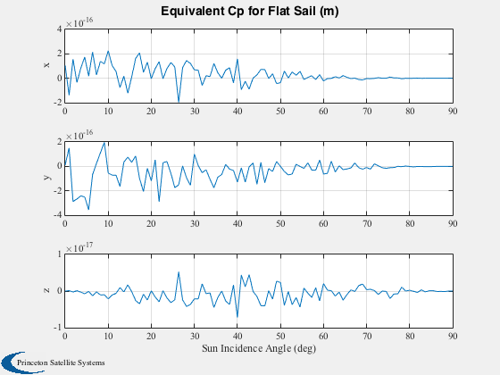 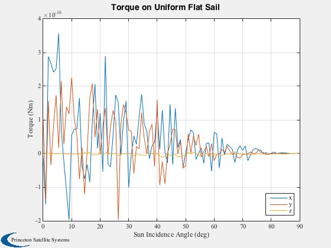 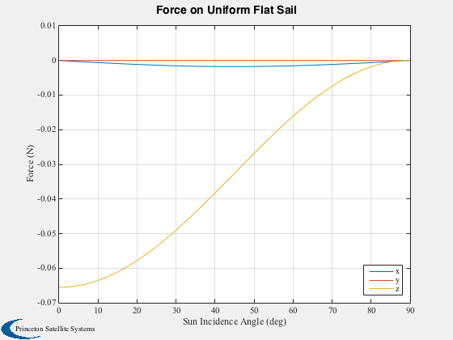 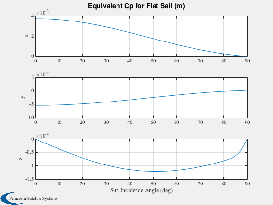 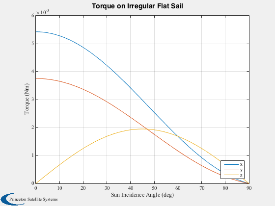 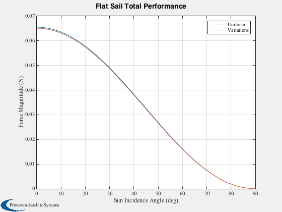 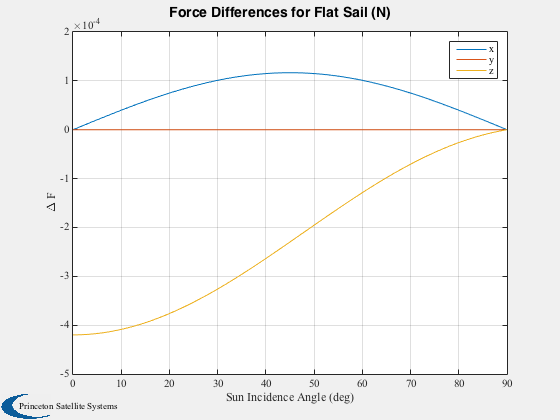 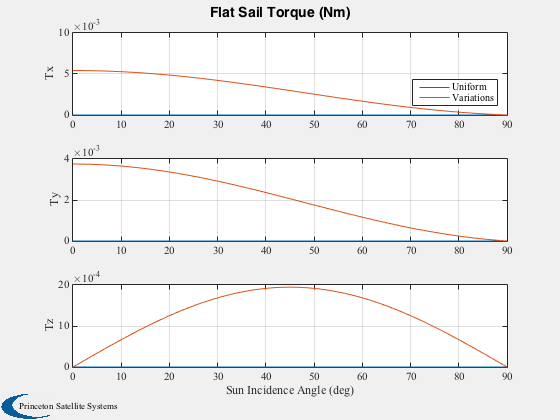 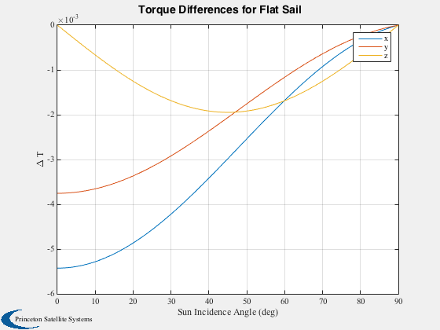 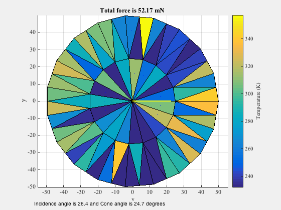 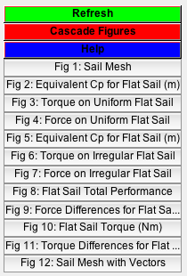